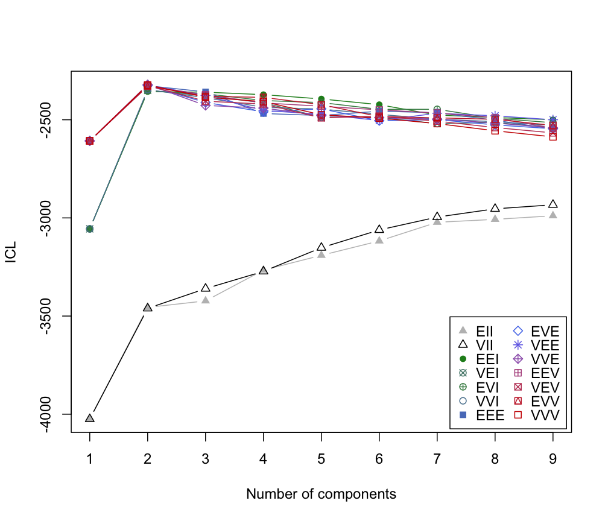

mclustICL.RdICL (Integrated Complete-data Likelihood) for parameterized Gaussian mixture models fitted by EM algorithm initialized by model-based hierarchical clustering.
mclustICL(data, G = NULL, modelNames = NULL,
initialization = list(hcPairs = NULL,
subset = NULL,
noise = NULL),
x = NULL, …)
# S3 method for mclustICL
summary(object, G, modelNames, …)
| data | A numeric vector, matrix, or data frame of observations. Categorical variables are not allowed. If a matrix or data frame, rows correspond to observations and columns correspond to variables. |
|---|---|
| G | An integer vector specifying the numbers of mixture components
(clusters) for which the criteria should be calculated.
The default is |
| modelNames | A vector of character strings indicating the models to be fitted
in the EM phase of clustering. The help file for
|
| initialization | A list containing zero or more of the following components:
|
| x | An object of class |
| … | Futher arguments used in the call to |
| object | An integer vector specifying the numbers of mixture components
(clusters) for which the criteria should be calculated.
The default is |
Returns an object of class 'mclustICL' containing the the ICL criterion
for the specified mixture models and numbers of clusters.
The corresponding print method shows the matrix of values and the top models according to the ICL criterion. The summary method shows only the top models.
Biernacki, C., Celeux, G., Govaert, G. (2000). Assessing a mixture model for clustering with the integrated completed likelihood. IEEE Trans. Pattern Analysis and Machine Intelligence, 22 (7), 719-725.
Scrucca L., Fop M., Murphy T. B. and Raftery A. E. (2016) mclust 5: clustering, classification and density estimation using Gaussian finite mixture models, The R Journal, 8/1, pp. 205-233.
#> Integrated Complete-data Likelihood (ICL) criterion: #> EII VII EEI VEI EVI VVI EEE #> 1 -4024.721 -4024.721 -3055.835 -3055.835 -3055.835 -3055.835 -2607.623 #> 2 -3455.814 -3460.903 -2356.273 -2350.728 -2353.254 -2346.161 -2326.710 #> 3 -3422.758 -3360.264 -2359.458 -2377.306 -2367.537 -2387.744 -2357.824 #> 4 -3265.796 -3272.457 -2371.996 -2413.391 -2402.189 -2436.318 -2468.261 #> 5 -3190.702 -3151.887 -2394.022 -2486.702 -2412.390 -2445.754 -2478.220 #> 6 -3117.441 -3061.335 -2423.024 -2486.795 -2446.878 -2472.624 -2456.239 #> 7 -3022.312 -2995.759 -2476.203 -2519.776 -2446.706 -2496.750 -2464.343 #> 8 -3007.364 -2953.728 -2488.504 -2513.529 -2492.319 -2509.675 -2502.177 #> 9 -2989.092 -2933.144 -2499.876 -2540.432 -2515.042 -2528.602 -2547.111 #> EVE VEE VVE EEV VEV EVV VVV #> 1 -2607.623 -2607.623 -2607.623 -2607.623 -2607.623 -2607.623 -2607.623 #> 2 -2325.768 -2323.396 -2320.763 -2330.000 -2325.727 -2328.163 -2322.697 #> 3 -2412.034 -2376.466 -2427.038 -2372.365 -2405.333 -2380.322 -2385.244 #> 4 -2459.430 -2452.689 -2440.279 -2414.165 -2419.889 -2385.843 -2407.555 #> 5 -2444.255 -2472.038 -2478.628 -2431.096 -2490.222 -2423.174 -2474.493 #> 6 -2504.770 -2503.936 -2489.104 -2449.583 -2481.393 -2483.772 -2491.597 #> 7 -2499.326 -2466.783 -2496.300 -2465.693 -2506.829 -2490.131 -2519.470 #> 8 -2526.028 -2479.790 -2516.572 -2489.431 -2539.783 -2497.812 -2556.115 #> 9 -2545.663 -2499.921 -2541.675 -2542.877 -2566.735 -2528.600 -2587.235 #> #> Top 3 models based on the ICL criterion: #> VVE,2 VVV,2 VEE,2 #> -2320.763 -2322.697 -2323.396summary(faithful.ICL)#> Best ICL values: #> VVE,2 VVV,2 VEE,2 #> ICL -2320.763 -2322.697467 -2323.39551 #> ICL diff 0.000 -1.934645 -2.63269plot(faithful.ICL)# NOT RUN { # compare with faithful.BIC <- mclustBIC(faithful) faithful.BIC plot(faithful.BIC) # }